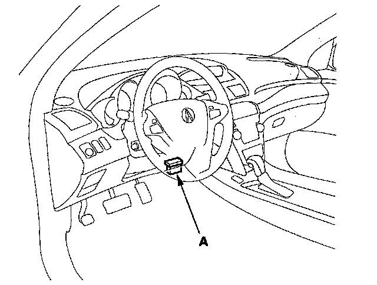

Shift Lock Solenoid Test
Shift Lock Solenoid Test1. Connect the HDS to the DLC (A).

2. Choose Shift Lock Solenoid Test in the Miscellaneous Test Menu, and check that the shift lock solenoid operates with the HDS.
NOTE: If the HDS does not communicate with the PCM, troubleshoot the DLC circuit.
3. Check that the shift lever can be moved out of the P position when Shift Lock Solenoid: ON. Move the shift lever back in the P position, and make sure it locks with Shift Lock Solenoid: OFF.
4. Check that the shift lock releases when the shift lock release is pushed, and check that it locks when the shift lock release is released.
5. If the shift lock solenoid does not work properly, perform shift lock system troubleshooting. Shift Lock System Circuit Troubleshooting